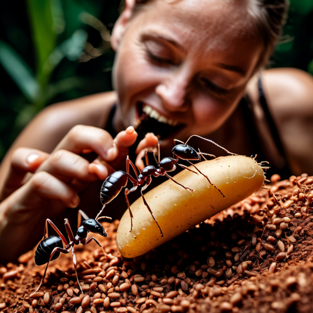

Ant Chips
Ingredients
- Ant-shaped cookie cutter molds
- Freshly caught edible ants (make sure they are safe to eat)
- Cornmeal or chickpea flour (for the chip dough)
- Seasonings (such as paprika, garlic powder, and salt)
- Olive oil (for frying)
- Edible food coloring (black, for ant-like coloring)
How to make:
- Prepare the Ant-Shaped Molds:
- Obtain ant-shaped cookie cutter molds for shaping the chips.
- Catch Edible Ants:
- Make sure to collect edible ants from a safe and clean source, ensuring they are fit for consumption.
- Create Chip Dough:
- Prepare a chip dough by mixing cornmeal or chickpea flour with water to form a dough-like consistency.
- Add seasonings (such as paprika, garlic powder, and salt) to the dough for flavor.
- Roll Out the Dough:
- Roll out the dough on a flat surface and use the ant-shaped molds to cut out chip shapes.
- Add Edible Ants:
- Place freshly caught edible ants on the chip shapes, positioning them as desired.
- Fry the Ant Chips:
- Heat olive oil in a frying pan or deep fryer.
- Carefully fry the ant chips until they turn golden brown and crisp.
- Apply Food Coloring (Optional):
- If desired, use edible food coloring (black) to enhance the ant-like appearance of the chips.
- Serve and Enjoy:
- Plate your creative "Ant-Shaped Ant Chips" and serve them as a playful and imaginative snack.